가스기사 (2008-03-02 기출문제)
1과목: 가스유체역학
1. 다음 중 용어에 대한 정의가 틀린 것은?
- 이상유체 : 점성이 없다고 가정한 비압축성 유체
- 뉴턴유체 : 전단응력이 속도구배에 비례하는 유체
- 표면장력계수 : 액체 표면상에서 작용하는 단위길이당 장력
- 동점성계수 : 절대점도와 유체압력의 비
(정답률: 54%)

2. 비중 0.8 인 유체의 동점성계수(kinematic viscosity)가 1.5×10-6m2/s일 때 이 유체의 절대정도 μ는 몇 kg/m·s인가?
- 1.2×10-6
- 1.9×10-6
- 1.2×10-3
- 1.9×10-3
(정답률: 40%)
3. 다음은 Newton 및 Non Newton 유체의 유동에 대하여 전단응력 τ와 속도기울기 du/dy의 관계를 나타낸 그림이다. 치약이나 진흙과 같은 유체의 특성에 가장 가까운 것은?
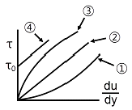
- ①
- ②
- ③
- ④
(정답률: 28%)
4. 원형 관내를 유체가 흐르고 있을 때 경계층이 완전히 성장하여 일정한 속도분포를 유지하면서 흐르는 흐름을 무엇이라고 하는가?
- 난류
- 층류
- 플러그(plug)흐름
- 완전히 발달된 흐름
(정답률: 60%)
5. 정체온도 Ts, 임계온도 Tc, 비열비를 k라 하면 이들의 관계를 옳게 나타낸 것은?
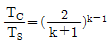
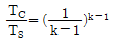
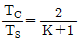
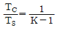
(정답률: 64%)
6. 경사각이 30°인 경사관식 압력계의 눈금 차이가 40㎝ 이었다. 이 때 양단의 차압(P1- P2)을 구하면 약 몇 kPa인가? (단, 비중이 0.8인 기름을 사용한다.)
- 1.57
- 1.96
- 3.14
- 3.92
(정답률: 29%)
7. Hagen - Poiseuille 식에 대한 설명으로 옳은 것은?
- 유체흐름과 온도의 관계식이다.
- 층류의 경우 압력손실을 구하는데 사용된다.
- 층류의 운동에너지와 위치에너지의 관계를 나타낸다.
- 임계속도를 나타내는 식이다.
(정답률: 43%)
8. 25℃, 100kPa인 방 안의 상대습도가 60%이라면 절대습도(또는 습도비)는 몇 kgH2O/kg건조공기인가? (단, 25℃에서 물의 포화압력은 3.17kPa이다.)
- 0.008
- 0.012
- 0.029
- 0.038
(정답률: 37%)
9. 압축성 유체가 유동할 때에 대한 현상으로 옳지 않은 것은?
- 압축성 유체가 축소 유로를 등엔트로피 유동할 때 얻을 수 있는 최대 유속은 음속이다.
- 압축성 유체가 초음속을 얻으려면 유로에 수축부, 목부분 및 확대부를 가져야 한다.
- 압축성 유체가 초음속으로 유동할 때의 특성을 임계특성(임계온도 T⋆, 임계압력 P⋆ 등)이라 한다.
- 유체가 갖는 엔탈피를 운동에너지로 효율적으로 바꿀 수 있도록 설계된 유로를 노즐이라 한다.
(정답률: 37%)
10. 마찰이 없는 압축성 기체의 유동에 대한 다음 설명 중 옳은 것은?
- 확대관(pipe)에서 속도는 항상 감소한다.
- 속도는 수축-확대 노즐의 목에서 항상 음속이다.
- 초음속 유동에서 속도가 증가하려면 단면적은 감소하여야 한다.
- 수축-확대 노즐의 목에서 유체속도는 음속보다 클 수 없다.
(정답률: 50%)
11. 완전발달 층류 원관유동에서 최대속도 Umax와 평균속도 의 관계식은?
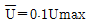
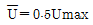
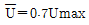
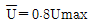
(정답률: 91%)
12. 유체기계 중 주로 비압축성 유체에 쓰이는 기계는?
- 압축기(compressor)
- 송풍기(Blower)
- 팬(Fan)
- 펌프(Pump)
(정답률: 67%)
13. 펌프의 운전 중 공동현상(cavitation)이 발생하였을 때 나타나는 현상이 아닌 것은?
- 효율의 감소
- 펌프의 소음 및 진동
- 펌프 깃의 마모
- 양정의 증가
(정답률: 72%)
14. 전양정 30m, 송출량 7.5m3/min, 펌프의 효율 0.8인 펌프의 수동력은 약 몇 kW인가? (단, 물의 밀도는 1000kg/m3이다.)
- 29.4
- 36.8
- 42.8
- 46.8
(정답률: 알수없음)
15. 기계효율을 ηm, 수력효율을 ηh, 체적효율을 ηv라고 할 때 펌프의 총효율을 η는?(문제 오류로 보기 내용이 정확하지 않습니다. 정답은 3번입니다. 정확한 보기 내용을 아시는분 께서는 오류신고를 통하여 내용 작성 부탁 드립니다.)
- η＝ηmㆍηh/ηv
- η＝ηmㆍηv/ηh
- η＝ηmㆍηh/ηv
- η＝ηvㆍηv/ηm
(정답률: 알수없음)
16. 비압축성 유체의 유량을 일정하게 하고, 관지름을 2배로 하면 유속은 어떻게 되는가? (단, 기타 손실은 무시한다.)
- 1/2로 느려진다.
- 1/4로 느려진다.
- 2배로 빨라진다.
- 4배로 빨라진다.
(정답률: 알수없음)
17. 다음 중 1cP(centipoise)를 옳게 나타낸 것은?
- 10kg·m2/s
- 10-2dyne·cm2/s
- 1N/㎝·s
- 10-2dyne·s/cm2
(정답률: 34%)
18. 유체의 물성 또는 힘에 대한 설명으로 옳지 않은 것은?
- 밀도는 단위 체적당 유체의 질량이다.
- 부력은 물체가 정지하고 있는 유체 속에 잠겨 있든가 또는 액면에 떠 있을 때 유체로부터 받는 힘이다.
- 비중은 4℃에서 수은의 밀도와 측정하려는 유체의 밀도비이다.
- 전단응력은 점성에 의한 속도구배에 기인한 단위면적당의 마찰력이다.
(정답률: 40%)
19. 성능이 동일한 n 대의 펌프를 서로 병렬로 연결하고 원래와 같은 양정에서 작동시킬 때 유체의 토출량은?
- 1/n로 감소한다.
- n배 만큼 증가한다.
- 원래와 동일하다.
- 1/(2n)로 감소한다.
(정답률: 72%)
20. 공기가 물체 주위를 1000m/s로 흐르고 있다. 정체점에서의 공기의 온도는 주위 공기 온도보다 얼마나 높은가? (단, 공기의 기체상수 값은 287J/kg·K 이고 비열비는 1.4이다.)
- 298K
- 398K
- 498K
- 598K
(정답률: 50%)
2과목: 연소공학
21. 다음 [그림]은 카르노(Carnot)사이클의 p-v선도이다. 카르노 사이클의 열효율을 바르게 나타낸 것은?
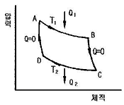
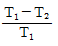
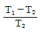
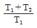
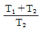
(정답률: 73%)
22. 298.15K, 0.1MPa 상태의 일산화탄소(CO)를 같은 온도의 이론 공기량으로 정상유동 과정으로 연소시킬 때 생성물의 단열화염 온도를 주어진 표를 이용하여 구하면 약 몇 K인가? (단, 이 조건에서 CO 및 CO2의 생성엔탈피는 각각 -11⑤29kJ/kmol, -393522kJ/kmol이다.)
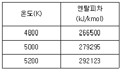
- 4835
- 5⑤8
- 5194
- 5293
(정답률: 47%)
23. 다음 중 가역단열 과정에 해당하는 것은?
- 정온과정
- 정적과정
- 등엔탈피과정
- 등엔트로피과정
(정답률: 80%)
24. 다음 [그림]은 오토사이클 선도이다. 계로부터 열이 방출되는 과정은?
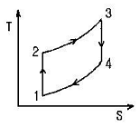
- 1 → 2과정
- 2 → 3과정
- 3 → 4과정
- 4 → 1과정
(정답률: 67%)
25. 화염의 안정범위가 넓고, 조작이 용이하며 역화의 위험이 없는 연소 형태는?
- 표면연소
- 분해연소
- 확산연소
- 예혼합연소
(정답률: 48%)
26. 중유의 경우 저발열량과 고발열량의 차이는 중유 1kg당 얼마가 되는가? (단, h : 중유 1kg당 함유된 수소의 중량(kg), w : 중유 1kg당 함유된 수분의 중량(kg)이다.)
- 600(9h＋W)
- 600h＋W
- 600W＋h
- 600(W＋h)
(정답률: 47%)
27. 어떤 액체연료를 분석한 결과 탄소 65w%, 수소 25w%, 산소 8w%, 황 2w% 가 함유되어 있음을 알았다. 이 연료의 완전연소에 필요한 이론공기량은 약 몇 kg/kg 연료인가?
- 9.4
- 11.5
- 13.7
- 15.8
(정답률: 알수없음)
28. 가연성 기체의 최소 착화에너지에 대한 설명으로 옳은 것은?
- 온도가 높아질수록 최소 착화에너지는 높아진다.
- 연소속도가 느릴수록 최소 착화에너지는 낮아진다.
- 열전도율이 적을수록 최소 착화에너지는 낮아진다.
- 압력이 낮을수록 최소 착화에너지는 낮아진다.
(정답률: 54%)
29. 메탄 80v%, 에탄 15v%, 프로판 4v%, 부탄 1v%인 혼합가스의 공기 중 폭발하한계 값은 약 몇 %인가? (단, 각 성분의 하한계 값은 메탄 5%, 에탄 3%, 프로판 2.1%, 부탄 1.8%이다.)
- 2.3
- 4.3
- 6.3
- 8.3
(정답률: 36%)
30. 기체의 연소반응 중 다음 [보기]의 과정에 해당하는 것은?
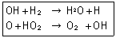
- 개시(initiation)반응
- 전화(propagation)반응
- 가지(branching)반응
- 종말(termination)반응
(정답률: 75%)
31. 가연성가스가 폭발할 위험이 있는 농도에 도달할 우려가 있는 장소를 위험장소라 한다. 밀폐된 용기 또는 설비 내에 밀봉된 가연성가스가 그 용기 또는 설비의 사고로 인해 파손되거나 오조작의 경우에만 누출할 위험이 있는 장소는 다음 중 어느 장소에 해당하는가?
- 0종 장소
- 1종 장소
- 2종 장소
- 3종 장소
(정답률: 72%)
32. 공기비가 클 경우 연소에 미치는 영향에 대한 설명 중 틀린 것은?
- 통풍력이 강하여 배기가스에 의한 열손실이 많아진다.
- 연소가스 중 NOx의 양이 많아져 저온부식이 된다.
- 연소실 내의 연소온도가 저하한다.
- 불완전연소가 되어 매연이 많이 발생한다.
(정답률: 38%)
33. 어떤 열기관이 150kW의 출력으로 10시간 운전하여 400kg의 연료를 소비하였다. 연료의 발열량을 40MJ/kg이라고 할 때 기관으로부터 방출된 열량은 몇 MJ인가?
- 5400
- 10600
- 16000
- 21400
(정답률: 47%)
34. 다음 중 폭발 시 파편이 화염중심으로부터 압력이 전파되는 반경거리(R)를 구하는 식은? (단, W : TNT 당량, k : 반경거리 R에서 압력을 나타내는 상수이다.)
- R＝kW1/2
- R＝k W1/3
- R＝kW1/4
- R＝k W1/5
(정답률: 36%)
35. 다음 중 폭광유도거리(DID)가 짧아지는 경우는?
- 압력이 낮을 때
- 관지름이 굵을 때
- 점화원의 에너지가 작을 때
- 정상 연소속도가 큰 혼합가스일 때
(정답률: 25%)
36. 가스가 노즐로부터 일정한 압력으로 분출하는 힘을 이용하여 연소에 필요한 공기를 흡인하고, 혼합관 중에서 혼합한 후 화염공에서 분출시켜 예혼합연소시키는 버너는?
- 전 1차 공기식
- 블라스트식
- 적화식
- 분젠식
(정답률: 71%)
37. 5m×10m×4m인 실내의 압력이 100kPa 이며, 온도가 25℃일 때 공기의 질량은 약 몇 kg인가? (단, 공기의 상수 R 값은 0.287kJ/kg·K이다.)
- 234
- 242
- 250
- 263
(정답률: 50%)
38. 가연성 혼합가스에 불활성 가스를 주입하여 산소의 농도를 최소산소농도(MOC) 이하로 낮게하는 공정은?
- 릴리프(relief)
- 벤트(vent)
- 이너팅(inerting)
- 리프팅(lifting)
(정답률: 67%)
39. 1기압의 외압에서 1몰인 이상기체의 온도를 5℃ 높였다. 이때 외계에 한 최대 일은 약 몇 cal인가?
- 0.99
- 9.94
- 99.4
- 994
(정답률: 50%)
40. 전기기기의 불꽃, 아크가 발생하는 부분을 절연유에 격납하여 폭발가스에 점화되지 않도록 한 방폭구조는?
- 안전증방폭구조
- 유입방폭구조
- 내압방폭구조
- 본질안전방폭구조
(정답률: 62%)
3과목: 가스설비
41. 비열이 0.9,kcal/kg·℃ 인 액체 6000kg 을 30℃에서 50℃로 올리는데 kg의 프로판이 소비되는가? (단, 프로판의 발열량은 12000kcal/kg이다.)
- 8
- 9
- 10
- 11
(정답률: 54%)
42. 다음 중 산소 가스의 용도가 아닌 것은?
- 가스용접 및 가스절단용
- 유리제조 및 수성가스 제조용
- 아세틸렌 가스청정제
- 로켓분사장치 추진용
(정답률: 58%)
43. LP 가스설비에서 기화기 사용 시의 장점에 대한 설명으로 가장 거리가 먼 것은?
- 공급가스 조성이 일정하다.
- 용기압력을 가감 조절할 수 있다.
- 한냉 시에도 충분히 기화된다.
- 기화량을 가강 조절할 수 있다.
(정답률: 47%)
44. 나프타 접촉분해법에서 개질온도 7⑤℃에서 개질압력을 1기압보다 높일 때 가스조성의 변화로 옳은 것은?(오류 신고가 접수된 문제입니다. 반드시 정답과 해설을 확인하시기 바랍니다.)
- H2와 CO가 증가하고, CH4와 CO2가 감소한다.
- H2와 CO가 감소하고, CH4와 CO2가 감소한다.
- CO와 CO2가 증가하고, CH4와 H2가 감소한다.
- CH4와 CO가 증가하고, H2와 O2가 감소한다.
(정답률: 25%)
45. 증기압축식 냉동사이클의 과정을 옳게 나타낸 것은?
- 압축기 → 팽창밸브 → 수액기 → 응축기 → 증발기
- 압축기 → 수액기 → 응축기 → 팽창밸브 → 증발기
- 압축기 → 증발기 → 수액기 → 응축기 → 팽창밸브
- 압축기 → 응축기 → 수액기 → 팽창밸브 → 증발기
(정답률: 40%)
46. 다단 압축을 하는 주된 목적으로 옳은 것은?
- 압축일과 체적효율의 증가
- 압축일 증가와 체적효유 감소
- 압축일 감소와 체적효율 증가
- 압축일과 체적효율의 감소
(정답률: 72%)
47. 저온수증기 개질 프로세스의 기본적 구성 단계로 옳은 것은?
- 원료탈황 → 열회수 → 가스제조
- 원료탈황 → 가스제조 → 열회수
- 가스제조 → 원료탈황 → 열회수
- 열회수 → 원료탈황 → 가스제조
(정답률: 42%)
48. 다음 중 일정압력 이하로 내려가면 가스 분출이 정지되는 구조의 안전밸브는?
- 가용전식
- 파열식
- 스프링식
- 박판식
(정답률: 72%)
49. 결정 조직의 거칠은 것을 미세화하여 조직을 균일하게 하고 조직의 변형을 제거하기 위하여 균일하게 가열한 후 공기 중에서 냉각하는 열처리 방법은?
- 퀀칭
- 노말라이징
- 어닐링
- 템퍼링
(정답률: 39%)
50. 실린더 안지름이 20㎝, 피스톤행정 15㎝, 매분회전수 300, 효율이 80%인 수평 1단 단동압축기가 있다. 지시평균유효압력을 0.2MPa로 하면 압축기에 필요한 전동기의 마력은 약 몇 PS인가? (단, 1MPa은 10kgf/cm2로 한다.)
- 5.0
- 7.8
- 9.7
- 13.2
(정답률: 53%)
51. 다음 중 고압가스의 분출에 의해 정전기가 발생하기 가장 쉬운 경우는?
- 가스의 분자량이 적은 경우
- 가스가 충분히 건조되어 있는 경우
- 가스의 온도가 높은 경우
- 가스 속에 액체나 고체의 미립자가 있을 경우
(정답률: 65%)
52. 배관의 전기방식 중 유전양극법에서 저전위 금속으로 주로 사용되는 것은?
- 철
- 구리
- 칼슘
- 마그네슘
(정답률: 55%)
53. 2단 감압방식 조정기의 특징에 대한 설명 중 틀린 것은?
- 장치가 복잡하고 조작이 어렵다.
- 재액화가 발생할 우려가 있다.
- 공급 압력이 안정하다.
- 배관의 지름이 커야 한다.
(정답률: 27%)
54. 도시가스 공급설비인 정압기(Governer) 전단에 설치된 Gas Heater의 설치 목적이 아닌 것은?
- 공급온도 적정유지
- 설비 동결 방지
- 계량 수율 증대
- 사전 가스온도 보상
(정답률: 54%)
55. 다음 가스액화사이클 중 여러 대의 압축기를 이용하여 각 단에서 점차 비점이 낮은 냉매를 사용하여 기체를 액화하는 방식은?
- 클라우드(Claude)식
- 린데(Linde)식
- 캐피자(Kapitza)식
- 캐스케이드(Cascade)식
(정답률: 65%)
56. 아세틸렌 용기 충전 시 사용하는 다공물질의 구비조건이 아닌 것은?
- 화학적으로 안정하여야 한다.
- 기계적 강도가 있어야 한다.
- 안전성이 있어야 한다.
- 저다공도이어야 한다.
(정답률: 73%)
57. 액화천연가스의 저장설비 및 처리설비에서 안전거리 계산식으로 옳은 것은? (단, L은 유지하여야 하는 거리(m), C는 상수, W는 저장능력 또는 액화천연가스의 질량을 나타낸다.)
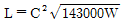
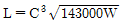
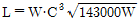
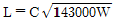
(정답률: 50%)
58. 다음 중 수소를 얻을 수 없는 반응은?
- Al＋NaOH＋H2O
- Hg＋HCI
- Na＋H2O
- Zn＋H2SO4
(정답률: 64%)
59. 압축기에서 피스톤 행정량이 0.003m3이고, 회전수가 160rpm, 토출 가스량이 100kg/h일 때, 1kg당 체적이 0.2m3에 해당된다면 토출효율은 약 몇 %인가?
- 62
- 69
- 76
- 83
(정답률: 29%)
60. 흡수식 냉동기의 증발기에서 발생하는 수증기의 흡수제로 주로 사용되는 것은?
- 10% Ca(OH)2
- 피로갈롤용액
- 30% NaOH
- LiBr
(정답률: 50%)
4과목: 가스안전관리
61. 공기액화분리기에 설치된 액화산소통 내의 액화산소 5L 중 탄화수소의 탄소 질량이 몇 mg을 넘을 때 공기 액화 분리기의 운전을 중지하고 액화산소를 방출하여야 하는지 그 기준값으로 옳은 것은?
- 5
- 10
- 100
- 500
(정답률: 40%)
62. 액화석유가스 저장시설을 지하에 설치하는 경우에 대한 설명 중 틀린 것은?
- 저장탱크실의 벽면 두께는 30㎝ 이상의 철근콘크리트로 한다.
- 저장탱크 주위에는 마른모래를 채운다.
- 탱크와 탱크사이는 최소 0.5m의 간격을 유지한다.
- 탱크 정상부와 지면사이는 60㎝ 이상으로 한다.
(정답률: 54%)
63. 가스밸브와 연소기기(가스레인지 등)사이에서 호스가 끊어지거나 빠진 겨우 가스가 계속 누출되는 것을 차단하기 위한 안전장치는?
- 열전대
- 퓨즈콕
- 압력조정기
- 가스누출검지기
(정답률: 53%)
64. 액화석유가스용 소형저장탱크의 설치 장소로 적합하지 않은 곳은?
- 탱크나 배관계에 유해 결함이 없는 곳
- 통풍이 좋고 수평한 곳
- 부등침하가 발생한 곳
- 습기가 적은 곳
(정답률: 64%)
65. 고압가스 운반용 차량에 고정된 탱크의 내용적은 독성가스(암모니아 제외)의 경우 몇 L를 초과하지 않아야 하는가?
- 10000
- 12000
- 15000
- 18000
(정답률: 60%)
66. 허용농도가 100만분의 1 미만인 액화독성가스를 몇 kg 이상 차량에 적재하여 운반하는 때에 운반책임자를 동승시켜야 하는가?
- 100
- 300
- 500
- 1000
(정답률: 6%)
67. 니켈(Ni) 금속을 포함하고 있는 촉매를 사용하는 공정에서 주로 발생할 수 있는 맹독성 가스는?
- 산화니켈(NiO)
- 니켈카르보닐[Ni(CO)4]
- 니켈클로라이드(NiCl4)
- 니켈염
(정답률: 54%)
68. 가연성가스 설비 내부에서 수리 또는 청소작업을 할 때에는 설비내부의 가스농도가 폭발하한계의 몇 % 이하가 되도록 하여야 하는가?
- 25
- 50
- 75
- 95
(정답률: 70%)
69. 프로판 1톤을 내용적 47L의 LPG용기에 충전할 경우 필요한 용기의 수는 몇 개인가? (단, 프로판의 충전정수는 2.35이다.)
- 45
- 50
- 55
- 60
(정답률: 47%)
70. 고압가스설비에 장치하는 압력계의 최고눈금은 얼마로 하여야 하는가?
- 내압시험 압력의 1.0배 이상 2배 이하
- 내압시험 압력의 1.5배 이상 2배 이하
- 상용압력의 1.0배 이상 2배 이하
- 상용압력의 1.5배 이상 2배 이하
(정답률: 36%)
71. 다음 용어에 대한 설명 중 틀린 것은?
- 가연성가스라 함은 폭발한계의 하한이 10% 이하인 것과 폭발한계의 상한과 하한의 차가 20% 이상인 것을 말한다.
- 독성가스라 함은 허용농도가 100만분의 200 이하인 것을 말한다.
- 용기라 함은 고압가스를 충전하기 위한 것으로서 지상에 고정설치된 것을 말한다.
- 저장설비라 함은 고압가스를 충전·저장하기 위한 설비로서 저장탱크 및 충전용기보관설비를 말한다.
(정답률: 47%)
72. 저장시설로부터 차량에 고정된 탱크에 가스를 주입하는 작업을 할 경우 차량운전자는 작업기준을 준수하여 작업하여야 한다. 다음 중 틀린 것은?
- 차량이 앞뒤로 움직이지 않도록 차바퀴의 전후를 차바퀴 고정목 등으로 확실하게 고정시킨다.
- 「이익작업 중(충전 중) 화기엄금」의 표시판이 눈에 잘 띄이는 곳에 세워져 있는가를 확인한다.
- 정전기제거용의 접지코드를 기지(基地)의 접지탭에 접속하여야 한다.
- 운전자는 이입작업이 종료될 때까지 운전석에 위치하여 만일의 사태에 대비하여야 한다.
(정답률: 54%)
73. 위험물을 취급하는 사업장에는 비상사태 발생 시 피해를 최소화시킬 수 있는 비상조치계획을 수립하여 운용하여야 한다. 비상조치계획에 포함될 사항으로 가장 거리가 먼 것은?
- 위험성 및 재해의 파악과 분석
- 비상대피 계획
- 감사팀의 구성
- 운전정지 절차
(정답률: 56%)
74. 실제 사용하는 도시가스의 열량이 9500kcal/m3이고 가스사용시설의 법적 사용량은 5200m3일 때 도시가스 사용량은 약 몇 m3인가? (단, 도시가스의 월사용예정량을 구할 때의 열량을 기준으로 한다.)
- 4490
- 6020
- 7020
- 8020
(정답률: 60%)
75. 다음 중 의료용 산소용기의 도색 및 표시가 바르게 된 것은?
- 백색으로 도색 후 흑색 글씨로 산소라고 표시한다.
- 녹색으로 도색 후 백색 글씨로 산소라고 표시한다.
- 백색으로 도색 후 녹색 글씨로 산소라고 표시한다.
- 녹색으로 도색 후 흑색 글씨로 산소라고 표시한다.
(정답률: 53%)
76. 독성가스 냉매를 사용하는 압축기 설치장소에는 냉매누출 시 체류하지 않도록 통풍구를 설치하여야 한다. 냉동능력 1ton당 통풍구 설치 기준은?
- 0.⑤m2 이상의 통풍구 설치
- 0.1m2 이상의 통풍구 설치
- 0.15m2 이상의 통풍구 설치
- 0.2m2 이상의 통풍구 설치
(정답률: 알수없음)
77. 액화석유가스 용기에 대한 기밀시험기준 중 틀린 것은? (단, 내용적 125L 미만의 것에 한한다.)
- 기밀시험은 샘플링검사를 한다.
- 기밀시험가스는 공기 또는 질소 등의 불연성가스를 이용한다.
- 용기 1개에 1분 이상에 걸쳐서 시험한다.
- 내용적이 50L 미만인 용기는 30초 이상의 시간에 걸쳐서 한다.
(정답률: 37%)
78. 다음 중 정량적 위험성평가 분석 방법이 아닌 것은?
- 결함수 분석(FTA) 기법
- 사건수 분석(ETA) 기법
- 원인-결과분석(Cause-Consequence Analysis) 기법
- 체크리스트(Checklist) 기법
(정답률: 34%)
79. 도시가스를 제조하는 고압 또는 중압의 가스공급설비에 대한 내압시험 및 기밀시험 압력의 기준으로 옳은 것은?
- 내압시험 : 최고사용압력의 1.5배 이상, 기밀시험 : 최고사용압력의 1.1배 이상
- 내압시험 : 사용압력의 1.5배 이상, 기밀시험 : 사용압력의 1.1배 이상
- 내압시험 : 최고사용압력의 1.1배 이상, 기밀시험 : 최고사용압력의 1.5배 이상
- 내압시험 : 사용압력의 1.1배 이상, 기밀시험 : 사용압력의 1.5배 이상
(정답률: 알수없음)
80. 도시가스의 총발열량을 측정하였더니 11500kcal/m3이고, 공기에 대한 비중이 0.6이었다. 웨베지수는 얼마인가?
- 6900
- 8908
- 14846
- 19167
(정답률: 43%)
5과목: 가스계측기기
81. 다음 루트식 유량계의 특징에 대한 설명 중 틀린 것은?
- 스트레이너의 설치가 필요하다.
- 맥동에 의한 영향이 대단히 크다.
- 적은 유량에서는 동작되지 않을 염려가 있다.
- 구조가 비교적 복잡하다.
(정답률: 48%)
82. 연소가스 중 CO와 H2의 분석에 사용되는 가스분석계는?
- 탄산가스계
- 질소가스계
- 미연소가스계
- 수소가스계
(정답률: 32%)
83. 막식가스미터에 해당되면 LP가스에 주로 사용되는 가스미터는?
- 독립내기식
- 루트식
- 로터리식
- 오벌식
(정답률: 16%)
84. MAX 1.5[m3/h], 0.5[L/rev]라고 표시되어 있는 가스미터가 1시간당 400회전 하였다면 가스유량은?
- 0.75m3/h
- 200L/h
- 1m3/h
- 400L/h
(정답률: 64%)
85. 다음 오리피스식 유량계에 대한 설명 중 틀린 것은?
- 구조가 비교적 간단하다.
- 압력손실이 크다.
- 관의 곡선부에 설치하여도 정도가 높다.
- 고압에 적당하다.
(정답률: 38%)
86. 유체의 압력 및 온도 변화에 영향이 적고, 소유량이며 정확한 유량제어가 가능하여 혼합가스 제조 등에 유용한 유량계는?
- Mass Flow Controller
- Roots Meter
- 벤투리유량계
- 터빈식유량계
(정답률: 70%)
87. 고온, 고압의 액체나 고점도의 부식성액체 저장탱크에 적당한 간접식 액면계는?
- 유리관식
- 방사선식
- 플로트식
- 검척식
(정답률: 59%)
88. 가스크로마토그래피의 분리관에 사용되는 충전 담체에 대한 설명 중 틀린 것은?
- 큰 표면적을 가진 미세한 분말이 좋다.
- 입자크기가 균등하면 분리작용이 좋다.
- 충전하기 전에 비휘발성 액체로 피복해야 한다.
- 화학적으로 활성을 띠는 물질이 좋다.
(정답률: 43%)
89. 길이 250㎝인 관으로 벤젠의 가스크로마토그램을 재었더니 기록지에 머무른 부피가 72.2㎜, 봉우리의 띠나비가 8.0㎜ 였다면 이론단 높이(HETP)는 약 몇 ㎝인가?
- 0.19
- 0.34
- 1.79
- 1.92
(정답률: 18%)
90. 막식가스미터에서 가스는 통과하지만 미터의 지침이 작동하지 않는 고장이 일어났다. 예상되는 원인으로 볼 수 없는 것은?
- 계량막의 파손
- 밸브의 탈락
- 지시장치 톱니바퀴의 불량
- 회전장치 부분의 고장
(정답률: 48%)
91. 다음 중 SI계의 기본단위에 해당하지 않는 것은?
- 광도(cd)
- 열량(kcal)
- 전류(A)
- 물질량(mol)
(정답률: 67%)
92. 선팽창계수가 다른 2종의 금속을 결합시켜 온도 변화에 따라 굽히는 정도가 다른 특성을 이용한 온도계는?
- 유리제 온도계
- 바이메탈 온도계
- 압력식 온도계
- 전기저항식 온도계
(정답률: 65%)
93. 가스크로마토그래피의 캐리어가스로 이용되는 것으로만 나열된 것은?
- He, H2, Ar, CO
- Ar, N2, H2, CO2
- H2, N2, Ar, He
- H2, N2, He, CO2
(정답률: 55%)
94. 다음 가스미터에 대한 설명 중 틀린 것은?
- 실측식에는 건식 및 습식이 있다.
- 루트미터는 넓은 설치공간이 필요하다.
- 습식미터는 기준기로도 이용된다.
- 루트미터는 회전자식으로 고속회전이 가능하다.
(정답률: 58%)
95. 다음 중 최대 용량 범위가 가장 큰 가스미터는?
- 습식가스미터
- 막식가스미터
- 루트미터
- 오리피스미터
(정답률: 45%)
96. 다음 열전대 온도계 중 가장 고온에서 사용할 수 있는 것은?
- 크로멜-알루멜
- 백금-백금 ⁃ 로듐
- 철-콘스탄탄
- 구리-콘스탄탄
(정답률: 58%)
97. 차압식 유량계로 유량을 측정하는 경우 교축(조임)기구 전후의 차압이 20.25Pa일 때 유량이 25m3/h이었다. 차압이 10.50Pa일 때 유량은 약 몇 m3/h인가?
- 13
- 18
- 35
- 48
(정답률: 24%)
98. 가스분석계 중 오르자트식의 측정방식으로 옳은 것은?
- 체적감소에 의한 방식
- 연소열 측정에 의한 방식
- 연속적정에 의한 방식
- 중량증가에 의한 방식
(정답률: 50%)
99. 부르돈관(Bcurdon Tube) 압력계의 종류가 아닌 것은?
- C자형
- 스파이럴형(Spiral type)
- 헬리컬형(Helical type)
- 케이컬형(Chemical type)
(정답률: 알수없음)
100. 다음 중 프로세스 제어에 해당하지 않는 것은?
- 방위
- 유량
- 효율
- 압력
(정답률: 31%)